전자계산기조직응용기사 (2018-03-04 기출문제)
1과목: 전자계산기 프로그래밍
1. 객체가 메시지를 받아 실행해야 할 객체의 구체적인 연산을 정의한 것은?
- 메소드
- 클래스
- 인스턴스
- 속성
(정답률: 83%)

2. 어떤 문제를 해결하거나 자료 처리를 위해서 고급언어 등을 이용하여 사용자가 직접 작성한 프로그램을 의미하는 것은?
- 시스템 프로그램(system program)
- 응용 프로그램(application program)
- 번역 프로그램(translator program)
- 기계 프로그램(machine program)
(정답률: 76%)
3. 객체지향 기법에서 하나 이상의 유사한 객체들을 묶어서 하나의 공통된 특성을 표현한 것으로 자료 추상화의 개념으로 볼 수 있는 것은?
- 메소드
- 메시지
- 클래스
- 인스턴스
(정답률: 84%)
4. 시스템이 알고 있는 특수한 기능을 수행하도록 이미 용도가 정해져 있는 단어로써, 프로그래머가 변수 이름이나 다른 목적으로 사용할 수 없는 핵심어를 무엇이라고 하는가?
- Constant
- Variable
- Reserved Word
- Array
(정답률: 75%)
5. C언어의 연산자에서 비교 연산자가 아닌 것은?
- ＞
- ＝
- ＜
- !＝
(정답률: 62%)
6. 수명 시간동안 고정된 하나의 값과 이름을 가진 자료로서 프로그램이 작동하는 동안 값이 절대로 바뀌지 않는 것을 의미하는 것은?
- 변수
- 포인터
- 상수
- 함수
(정답률: 82%)
7. 작성된 표현식이 BNF의 정의에 의해 바르게 작성되었는지를 확인하기 위하여 만든 트리는?
- menu tree
- king tree
- parse tree
- home tree
(정답률: 85%)
8. 객체의 전용자료와 메소드를 다른 객체가 접근할 수 없다는 의미로서 소프트웨어 공학의 정보은닉에 해당하는 것은?
- 캡슐화(encapsulation)
- 추상화(abstraction)
- 상속성(inheritance)
- 다형성(polymorphism)
(정답률: 83%)
9. C 언어에서 구조체 변수의 필드에 접근하기 위해 사용하는 연산자는?
- .(도트)
- &
- *
- !
(정답률: 68%)
10. 어셈블리어에서 어떤 기호적 이름에 상수값을 할당하는 명령은?
- ASSUME
- ORG
- EVEN
- EQU
(정답률: 72%)
11. 서브클래스의 객체는 더 높은 클래스의 모든 특성을 소유하는 객체 지향 특성은?
- 다형성
- 상속성
- 캡슐화
- 적응성
(정답률: 77%)
12. PC어셈블리 언어에서 나머지 연산자를 의미하는 것은?
- EQU
- AND
- MOD
- OR
(정답률: 82%)
13. 프로그램의 기억장소의 상태변화 및 이에 대한 조작으로 기술하는 것이 아니라, 입력과 출력의 함수만을 사용하여 기술하는 언어로 가장 옳은 것은?
- 명령형 언어
- 객체지향 언어
- 함수형 언어
- 논리 언어
(정답률: 71%)
14. 다음 C언어로 작성한 프로그램의 실행 결과로 가장 옳은 것은?
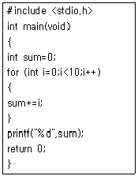
- 36
- 45
- 55
- 66
(정답률: 81%)
15. 프로그램에서 사용되는 함수 호출에서 함수에 인자를 넘겨줄 때, 함수 호출에서 사용되는 실인자가 저장되어 있는 기억 장소의 주소를 함수의 형식 인자에 넘겨주는 함수 호출 방식은?
- Call-by-value
- Call-by-reference
- Pass-by-name
- Call-by-call
(정답률: 68%)
16. 프로그램 제어방법 중 반복문의 종류에 해당하지않는 것은?
- While 문
- Switch Case 문
- Do While 문
- For 문
(정답률: 84%)
17. C 언어의 기억 클래스 종류가 아닌 것은?
- extern
- static
- register
- point
(정답률: 71%)
18. C언어의 이스케이프 문자의 의미가 잘못 짝지어진 것은?
- ＼f : 16진수로 표현
- ＼n : 커서를 다음 줄 앞으로 이동
- ＼b : 문자를 출력하고 뒤로 한 칸 이동
- ＼t : 커서를 일정 간격만큼 수평 이동
(정답률: 78%)
19. C 언어에서 문자열 출력 함수는?
- gets( )
- getchar( )
- puts( )
- putchar( )
(정답률: 72%)
20. 원시프로그램을 번역할 때 어셈블러에게 요구되는 동작을 지시하는 명령으로서 기계어로 번역되지 않는 명령어를 무엇이라고 하는가?
- 매크로 명령(macro instruction)
- 기계어 명령(machine instruction)
- 의사 명령(pseudo instruction)
- 오퍼랜드 명령(operand instruction)
(정답률: 75%)
2과목: 자료구조 및 데이터통신
21. Ipv6에 대한 설명 중 틀린 것은?
- 32비트의 주소체계를 사용한다.
- 멀티미디어의 실시간 처리가 가능하다.
- IPv4보다 보안성이 강화되었다.
- 자동으로 네트워크 환경구성이 가능하다.
(정답률: 72%)
22. LAN의 매체 접근 제어 방식에 해당하지 않는 것은?
- CSMA/CD
- Token Ring
- Token Bus
- Logical Link Control
(정답률: 63%)
23. 다음 LAN의 네트워크 토폴로지(topology)는 어떤 형인가?
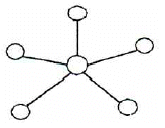
- 링형
- 성형
- 버스형
- 트리형
(정답률: 83%)
24. 비동기식 전달모드(ATM)에 사용되는 ATM cell의 헤더와 유료부하(payload)의 크기는 각각 몇 옥텟(octet)인가?
- 헤더 : 3옥텟, 유료부하 : 47옥텟
- 헤더 : 4옥텟, 유료부하 : 47옥텟
- 헤더 : 5옥텟, 유료부하 : 48옥텟
- 헤더 : 6옥텟, 유료부하 : 48옥텟
(정답률: 62%)
25. TCP/IP 모델 중 응용계층 프로토콜에 해당하지않는 것은?
- IP
- FTP
- SMTP
- TELNET
(정답률: 68%)
26. 사용자 단말기와 공중 데이터 망 사이의 인터페이스를 위해 표준화된 망 액세스 프로토콜은?
- X.25
- X.2
- X.28
- X.29
(정답률: 73%)
27. TCP와 UDP에 대한 설명으로 틀린 것은?
- TCP는 전이중 서비스를 제공한다.
- UDP는 연결형 서비스이다.
- TCP는 신뢰성 있는 전송 계층 프로토콜이다.
- UDP는 검사 합을 제외하고 오류제어 메커니즘이 없다.
(정답률: 67%)
28. 라우팅 프로토콜에 해당하지 않는 것은?
- RIP
- OSPF
- SMTP
- BGP
(정답률: 70%)
29. OSI 7계층 중 암호화, 코드변환, 데이터 압축의 역할을 담당하는 계층은?
- Data link Layer
- Application Layer
- Presentation Layer
- Session Layer
(정답률: 58%)
30. 다음이 설명하고 있는 ARQ 방식은?
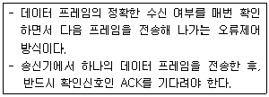
- Stop-and-Wait ARQ
- Go-back-N ARQ
- Selective-Repeat ARQ
- Forward-Stop ARQ
(정답률: 78%)
31. 다음의 tree를 postorder를 traverse한 결과는?
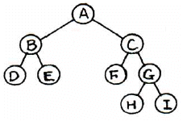
- ABDECFGHI
- DBEFCHGIA
- ABCDEFGHI
- DEBFHIGCA
(정답률: 75%)
32. 릴레이션은 참조할 수 없는 외래키 값을 가질 수 없음을 의미하는 제약조건은?
- 널 무결성
- 도메인 무결성
- 보안 무결성
- 참조 무결성
(정답률: 82%)
33. 이진트리에서 단말 노드 수가 n0, 차수가 2인 노드 수가 n2라 할 때, n0와 n2의 관계식으로 옳은 것은?
- n0 = n2+1
- n0 = (n2-1)/2
- n0 = 2n2+1
- n0 = (2n2-1)/2
(정답률: 49%)
34. 데이터베이스에서 트랜잭션이 가져야 할 특성으로 틀린 것은?
- 병행성
- 원자성
- 일관성
- 독립성
(정답률: 74%)
35. 리스트의 길이가 긴 경우 정렬(sorting) 방법 중 평균 수행시간이 가장 긴 것은?
- 퀵 정렬
- 힙 정렬
- 2-way merge 정렬
- 버블 정렬
(정답률: 68%)
36. A, B, C, D의 순서로 정해진 자료를 스택에 다음과 같이 입･출력 작업을 수행한 후의 결과로 옳은 것은?
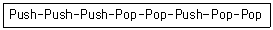
- A, B, C, D
- C, B, A, D
- A, B, D, C
- C, B, D, A
(정답률: 66%)
37. 해싱 함수가 아닌 것은?
- Division Method
- Folding Method
- Digit Analysis
- Least Square
(정답률: 56%)
38. 정점이 5개인 방향 그래프가 가질 수 있는 최대 간선수는? (단, 자기간선과 중복간선은 배제)
- 5개
- 10개
- 15개
- 20개
(정답률: 46%)
39. 릴레이션에 대한 설명으로 틀린 것은?
- 릴레이션의 한 행을 튜플이라고 한다.
- 속성은 릴레이션의 열을 의미한다.
- 한 릴레이션의 속성들은 고정된 순서를 갖는다.
- 튜플은 속성의 모임으로 구성된다.
(정답률: 66%)
40. 데이터베이스의 3층 스키마에 해당하지 않는 것은?
- 관계 스키마
- 개념 스키마
- 외부 스키마
- 내부 스키마
(정답률: 75%)
3과목: 전자계산기구조
41. N 가지의 정보를 2진수 코드로 부호화 하는데 필요한 비트수를 계산하는 방법으로 옳은 것은?
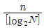
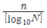
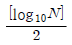
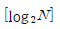
(정답률: 57%)
42. 일반적으로 CPU가 DMA 제어기로 보내는 정보가 아닌 것은?
- I/O 장치의 주소
- 연산(쓰기 혹은 읽기)지정자
- CPU 제조 고유 번호
- 전송될 데이터 단어들의 수
(정답률: 78%)
43. 다음과 같이 표현되는 바이트 머신의 데이터 형식의 명칭으로 가장 옳은 것은?
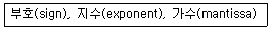
- 고정소수점 데이터(fixed point data)
- 가변장 논리 데이터(variable length logical data)
- 부동소수점 데이터(floating point data)
- 팩(pack) 형식의 10진수(decimal number)
(정답률: 68%)
44. 세그먼트에서 부연산을 수행하는데 20ns가 걸리고, 파이프라인은 4 세그먼트로 구성되어 있으며 100개의 태스크를 순차적으로 수행하는 파이프라인 시스템은 비파이프라인 시스템에 비해 약 몇 배의 속도 향상을 얻을 수 있는가?
- 2.81
- 3.25
- 3.88
- 4.08
(정답률: 51%)
45. 모듈러스-14 카운터는 몇 가지의 상태를 가지며, 이 카운터를 구성하기 위한 최소의 플립플롭의 수는 몇 개인가?
- 상태: 13가지, 플립플롭: 3개
- 상태: 14가지, 플립플롭: 4개
- 상태: 15가지, 플립플롭: 5개
- 상태: 16가지, 플립플롭: 6개
(정답률: 69%)
46. AND 마이크로 동작과 가장 유사한 것은?
- insert 동작
- mask 동작
- OR 동작
- packin 동작
(정답률: 71%)
47. 다음 마이크로명령어 형식에 관한 설명으로 가장 옳지 않은 것은?
- 조건 필드는 분기에 사용될 제어신호들을 발생시킨다.
- 연산 필드가 2개인 경우 2개의 마이크로 연산이 동시에 수행된다.
- 주소 필드는 분기가 발생할 경우 목적지 마이크로명령어 주소로 사용된다.
- 분기 필드는 분기의 종류와 다음에 실행할 마이크로명령어의 주소를 결정하는 방법을 명시한다.
(정답률: 20%)
48. 다음 중 SDRAM의 동작에 대한 설명으로 가장 옳지 않은 것은?
- 여러 개의 내부 뱅크들(Banks)에서 동시 액세스가 진행된다.
- 액세스가 진행되는 동안 CPU가 대기한다.
- 버스 클럭에 동기화되어 정보가 전송된다.
- 여러 개의 데이터들을 연속으로 전송하는 버스트 모드를 지원한다.
(정답률: 59%)
49. 다음 ADD 명령어의 마이크로 오퍼레이션에서 t2시간에 수행되어야 할 가장 적합한 동작(A)는? (단, MAR : Memory Address Register, MBR : Memory Buffer Register, M(addr) : Memory, AC : 누산기이다.)
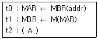
- AC ← MBR
- MBR ← AC
- M(MBR) ← MBR
- AC ← AC+MBR
(정답률: 63%)
50. DMA에 대한 설명으로 가장 옳은 것은?
- 인코더와 같은 기능을 수행한다.
- inDirect Memory Acknowledge의 약자이다.
- CPU와 메모리 사이의 속도차이를 해결하기 위한 장치이다.
- 메모리와 입출력 디바이스 사이에 데이터의 주고받음이 직접 행해지는 기법이다.
(정답률: 51%)
51. 64K DRAM 기억소자를 이용하여 64K바이트 주기억장치를 구성하고자 한다. 이 때 64K DRAM을 몇 개 사용하여야 하는가? (단, K=kilo이다.)
- 1
- 2
- 4
- 8
(정답률: 49%)
52. 입출력장치의 인터럽트 우선순위를 하드웨어적으로 결정하는 방식은?
- Daisy Chain
- Handshake
- Polling
- Strobe
(정답률: 63%)
53. 다음 중 1주소 명령어 형식을 따르는 마이크로명령어 MUL A를 가장 바르게 표현한 것은?(단, 보기의 M[A]는 기억장치와 A번지의 내용을 의미한다.)
- AC ← AC×M[A]
- R1 ← R2×M[A]
- AC ← M[A]
- M[A] ← AC
(정답률: 60%)
54. 병렬 가산기를 구성하는 각각의 전가산기 출력 캐리를 미리 예측 및 처리하여 리플캐리 지연을 제거한 가산기로 가장 옳은 것은?
- Ripple Carry Adder
- Carry Lookahead Adder
- Serial-parallel Adder
- Carry Save Adder
(정답률: 56%)
55. 전체 기억장치 액세스 횟수가 50이고, 원하는 데이터가 캐시에 있는 횟수가 45라고 할 때, 캐시의 미스율(miss ratio)은?
- 0.1
- 0.2
- 0.8
- 0.9
(정답률: 71%)
56. 인터럽트 우선순위결정과 가장 관계없는 것은?
- 트랩 방식
- 폴링 방식
- 벡터 방식
- 데이지 체인 방식
(정답률: 56%)
57. 다음 중 일반 응용프로그램이 직접 접근할 수 없는 레지스터는?
- 범용 레지스터
- 플래그 레지스터
- 인덱스 레지스터
- 세그먼트 레지스터
(정답률: 50%)
58. 소형계산기(calculator)에서 BCD 코드 대신 excess-3 코드를 많이 사용하는 가장 큰 이유는?
- 그래픽 기호의 표현이 용이하다.
- 에러 검출이 쉽다.
- 연속된 순간에 하나의 비트만 변화한다.
- 자기 보수가 가능하다.
(정답률: 63%)
59. 캐시메모리의 기록정책에서 쓰기(write) 동작이 이루어질 때마다 캐시메모리와 주기억장치의 내용을 동시에 갱신하는 방식으로 가장 옳은 것은?
- write-through
- write-back
- write-none
- write-all
(정답률: 67%)
60. 인스트럭션의 설계 과정에서 고려해야 할 사항이 아닌 것은?
- 데이터 구조
- 연산자의 수와 종류
- 인터럽트 종류
- 주소지정 방식
(정답률: 48%)
4과목: 운영체제
61. 다음 설명에 해당하는 디렉토리 구조는?
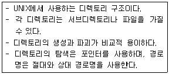
- 1단계 디렉토리 구조
- 2단계 디렉토리 구조
- 비순환 그래프 디렉토리 구조
- 트리 디렉토리 구조
(정답률: 59%)
62. 분산 운영체제의 개념 중 강결합(TIGHTLYCOUPLED) 시스템의 설명으로 옳지 않은 것은?
- 프로세서간의 통신은 공유 메모리를 이용한다.
- 여러 처리기들 간에 하나의 저장장치를 공유한다.
- 메모리에 대한 프로세서 간의 경쟁 최소화가 고려되어야 한다.
- 각 사이트는 자신만의 독립된 운영체제와 주기억장치를 갖는다.
(정답률: 63%)
63. FIFO 스케줄링에서 3개의 작업 도착시간과 CPU 사용시간(burst time)이 다음 표와 같다. 이 때 모든 작업들의 평균 반환시간(turn around time)은? (단, 소수점 이하는 반올림 처리한다.)
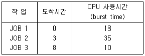
- 12
- 36
- 58
- 69
(정답률: 66%)
64. 프로세스들 간의 메모리 경쟁으로 인하여 지나치게 페이지폴트가 발생하여 전체 시스템의 성능이 저하되는 현상은?
- Fragmentation
- Thrashing
- Locality
- Prepaging
(정답률: 68%)
65. 운영체제를 자원 관리자(Resource Manager)라는 관점으로 접근했을 때, 자원들을 관리하는 과정을 순서대로 가장 옳게 나열한 것은?
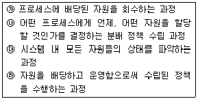
- ㉮ → ㉯ → ㉰ → ㉱
- ㉮ → ㉰ → ㉱ → ㉯
- ㉰ → ㉯ → ㉱ → ㉮
- ㉰ → ㉱ → ㉯ → ㉮
(정답률: 70%)
66. 시스템소프트웨어의 구성에서 처리프로그램과 가장 관계가 없는 것은?
- Job Scheduler
- Language Translate Program
- Service Program
- Problem Program
(정답률: 48%)
67. 주기억장치의 사용자 영역을 일정 수의 고정된 크기로 분할하여 준비상태 큐에서 준비 중인 프로그램을 각 영역에 할당하여 수행하는 기법은?
- 가변분할 기억장치 할당
- 고정분할 기억장치 할당
- 교체 기법
- 오버레이 기법
(정답률: 73%)
68. 한정된 시간 내 자료를 분석하여 정해진 시간에 반드시 작업을 처리하여야 하는 시스템은?
- Batch Processing
- Online Processing
- Real Time Processing
- Time Sharing Processing
(정답률: 53%)
69. 모니터에 대한 설명으로 옳지 않은 것은?
- 자원 요구 프로세스는 그 자원 관련 모니터 진입부를 반드시 호출한다.
- 한 순간에 하나의 프로세스만이 모니터에 진입할 수 있다.
- 정보 은폐의 개념을 사용한다.
- 모니터 외부의 프로세스는 모니터 내부 데이터를 직접 액세스 할 수 있다.
(정답률: 71%)
70. 스레드의 특징으로 가장 옳지 않은 것은?
- 실행 환경을 공유시켜 기억장소의 낭비가 줄어든다.
- 프로세스 외부에 존재하는 스레드도 있다.
- 하나의 프로세스를 여러 개의 스레드로 생성하여 병행성을 증진시킬 수 있다.
- 프로세스들 간의 통신을 향상시킬 수 있다.
(정답률: 63%)
71. UNIX에서 사용자에 대한 파일의 접근을 제한하는데 사용되는 명령어는?
- chmod
- du
- fork
- cat
(정답률: 73%)
72. 다음 디스크 스케줄링과 관련된 방법 중 그 성격이 다른 하나는?
- C-SCAN
- FCFS
- SLTF
- SSTF
(정답률: 44%)
73. 다음과 같은 Task List에서 SJF방식으로 Scheduling할 경우 Task 2의 종료 시간을 구하면? (단, 발생되는 Overhead는 무시한다.)
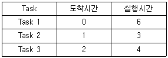
- 3
- 6
- 9
- 13
(정답률: 55%)
74. Preemptive Scheduling 방식에 해당하는 것은?
- FIFO
- FCFS
- HRN
- RR
(정답률: 54%)
75. UNIX에서 현재 디렉토리 내의 파일 목록을 확인하는 명령어는?
- ls
- cat
- fsck
- cp
(정답률: 72%)
76. 프로세스의 상태 전이에 속하지 않는 것은?
- Dispatch
- Spooling
- Wake up
- Workout
(정답률: 49%)
77. 운영체제의 운용 기법 종류 중 다음 설명에 가장 부합하는 것은?
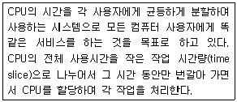
- Batch Processing System
- Multi Programming System
- Time Sharing System
- Real Time System
(정답률: 72%)
78. Dead Lock 발생의 필요충분조건이 아닌 것은?
- Circular Wait
- Hold and Wait
- Mutual Exclusion
- Preemption
(정답률: 58%)
79. 페이지 교체기법 중 LRU와 비슷한 알고리즘이며, 최근에 사용하지 않은 페이지를 교체하는 기법으로 시간 오버헤드를 줄이기 위해 각 페이지마다 참조 비트와 변형 비트를 두는 교체기법은?
- FIFO
- LFU
- NRU
- OPT
(정답률: 67%)
80. 페이징 기법에서 페이지 크기가 작아질수록 발생하는 현상으로 거리가 먼 것은?
- 기억장소 이용 효율이 증가한다.
- 입･출력 시간이 늘어난다.
- 내부 단편화가 감소한다.
- 페이지 맵 테이블의 크기가 감소한다.
(정답률: 51%)
5과목: 마이크로 전자계산기
81. 다음 기억장치 종류 중 동작속도가 가장 빠른 것은?
- 순서접근 저장매체
- 주기억장치
- 캐시기억장치
- 레지스터
(정답률: 65%)
82. 다음 중 USART를 제어하기 위한 레지스터가 아닌 것은?
- USART I/O 데이터 레지스터
- USART 타이머 레지스터
- USART 보레이트 레지스터
- USART 제어 상태 레지스터
(정답률: 50%)
83. 인터럽트에서 Polling의 우선순위는 프로그램 순서를 바꾸면 달라지므로 이를 하드웨어를 사용하여 고정한 것을 무엇이라 하는가?
- 벡터 인터럽트
- Daisy-chain
- 타이머 인터럽트
- Block-chain
(정답률: 66%)
84. 마이크로컴퓨터와 입･출력장치 인터페이스(interface)를 위해 반드시 일치시킬 필요가 없는 것은?
- 시스템 버스(bus)
- 전기적인 신호(signal)
- 정보교환 코드(code)
- 전송제어 방식(protocol)
(정답률: 48%)
85. 다음 중 연관 기억 장치(Associative Memory)에 관한 설명으로 틀린 것은?
- 병렬 탐색을 수행함으로 RAM보다 훨씬 빠르다.
- 주소에 의한 데이터 검색보다는 기억된 일부 내용에 의해서 데이터를 찾는다.
- CPU와 메모리 사이의 속도 격차를 완하하기 위하여 사용된다.
- 일반적으로 연관 기억 장치에는 마스크(mask) 레지스터와 키(key) 레지스터를 가지고 있다.
(정답률: 50%)
86. 다음 마이크로프로그램에 관한 설명 중 가장 옳지 않은 것은?
- 사용자 프로그램의 각 명령어가 마이크로프로그램에 의해 미세동작으로 구분되어 수행된다.
- 사용자가 임의로 변경할 수 없는 것이 대부분이다.
- CU(control unit) 내에 저장되어 있다.
- 명령어(micro-instruction)의 비트 수는 프로세서가 사용하는 데이터의 비트 수와 반드시 같아야 한다.
(정답률: 64%)
87. 다음 마이크로 오퍼레이션과 가장 관련 있는 것은?(단, EAC : 끝자리올림과 누산기, AC : 누산기)
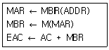
- AND
- ADD
- JMP
- BSA
(정답률: 73%)
88. 메모리 어드레스(Memory Address)를 지정하는데 사용되는 레지스터로 지정된 메모리 어드레스로부터 유효 주소를 계산하는데 사용되는 주소 정보를 기억시키는 레지스터는?
- MAR(Memory Address Register)
- IR(Instruction Register)
- SR(Status Register)
- IR(Index Register)
(정답률: 35%)
89. 제어 프로그램의 중추적 기능을 담당하는 프로그램으로서 처리 프로그램의 실행 과정과 시스템 전체의 동작 상태를 감시하고 지원하는 기능을 수행하는 제어 프로그램으로 가장 옳은 것은?
- data management program
- supervisor program
- system control program
- status control program
(정답률: 67%)
90. CPU내의 레지스터(register) 군에 속하지 않는 것은?
- Accumulator
- Random Access Memory
- Program Counter
- Stack Pointer
(정답률: 46%)
91. 하드디스크를 구성하는 주요 구성요소가 아닌것은?
- 헤드(Head)
- 레이저(Laser)
- 섹터(Sector)
- 실린더(Cylinder)
(정답률: 74%)
92. 마이크로프로세서는 클록(clock)에 의해 제어된다. 이 클록을 발생하는 회로는?
- 수정발진
- LC발진
- RC발진
- 마이크로발진
(정답률: 56%)
93. PSW(Program Status Word)가 사용되지 않는 것은?
- 인터럽트(Interrupt)의 처리
- CPU의 로딩(Loading)
- 어드레스의 선택
- CPU와 I/O의 통신
(정답률: 38%)
94. 마이크로프로세서의 특징으로 가장 거리가 먼 것은?
- 집적회로(IC)만으로 구성된 회로보다 소형이며, 경량이다.
- 집적회로(IC)만으로 구성된 회로보다 가격이 싸고, 소비전력이 작다.
- 집적회로(IC)만으로 구성된 회로보다 게이트의 수가 적어 신뢰성이 낮다.
- 마이크로프로세서의 특징을 이용한 신제품 개발은 개발 기간을 최소한으로 단축시킬 수 있다.
(정답률: 60%)
95. 직렬 통신 속도를 결정해 주기 위한 클록을 공급해 주는 것은?
- 병렬-직렬 변환기(Parallel-serial converter)
- 보레이트 공급기(Baud rate generator)
- 카운터 타이머 회로(Counter-timer circuit)
- DMA(Direct Memory Access)
(정답률: 60%)
96. 다음 프로그램이 의미하는 내용이 옳은 것은?(단, LD X,Y는 Y값을 X로 옮긴다는 뜻)
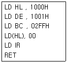
- 덧셈
- 루프
- 클리어
- 판단
(정답률: 61%)
97. 한 회선에 여러 개의 단말장치를 접속하는 방식으로 전용선을 사용하고 polling, selection 기법을 사용하는 방식은 무엇인가?
- point-to-point
- full-duplex
- multipoint
- half-duplex
(정답률: 69%)
98. 마이크로컴퓨터의 병렬 입출력 인터페이스가 아닌 것은?
- PIO
- UART
- PPI
- PIA
(정답률: 68%)
99. JTAG 인터페이스 구성시 포함되지 않는 것은?
- TDI(test data in)
- TDO(test data out)
- TCK(test clock)
- TDW(test data write)
(정답률: 53%)
100. 다음 설명에 해당하는 마이크로프로세서의 제어신호는?
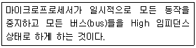
- Reset
- Bus Request
- Interrupt Request
- Read
(정답률: 48%)